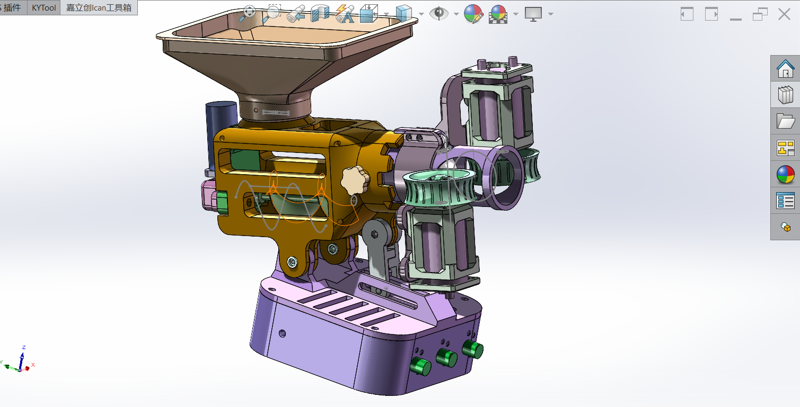
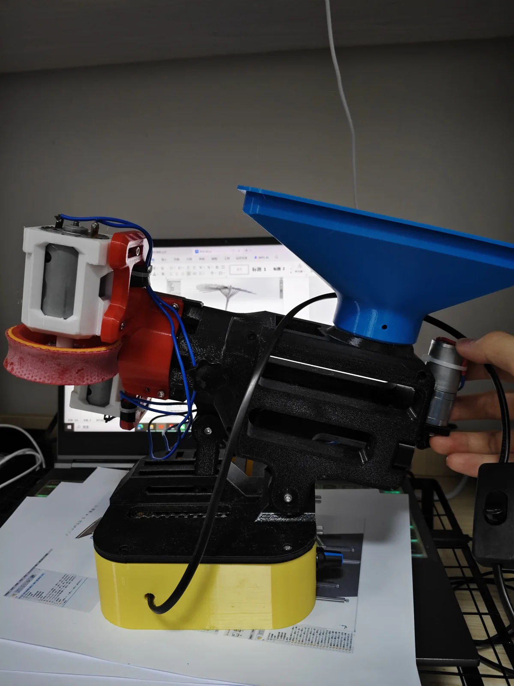
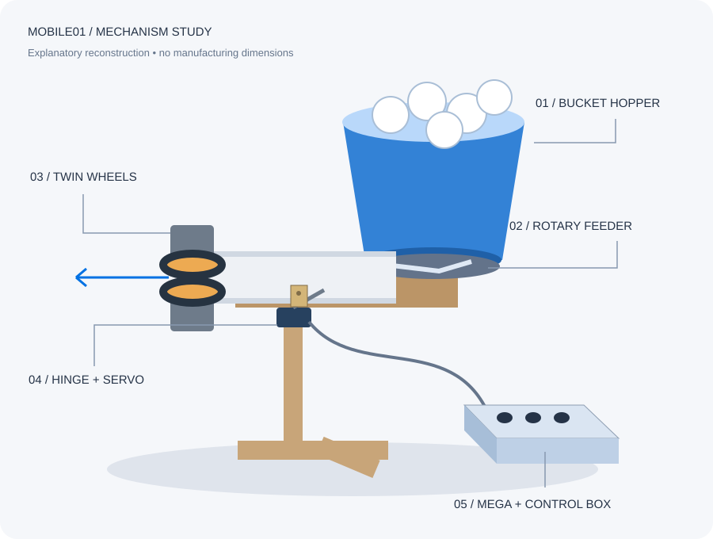
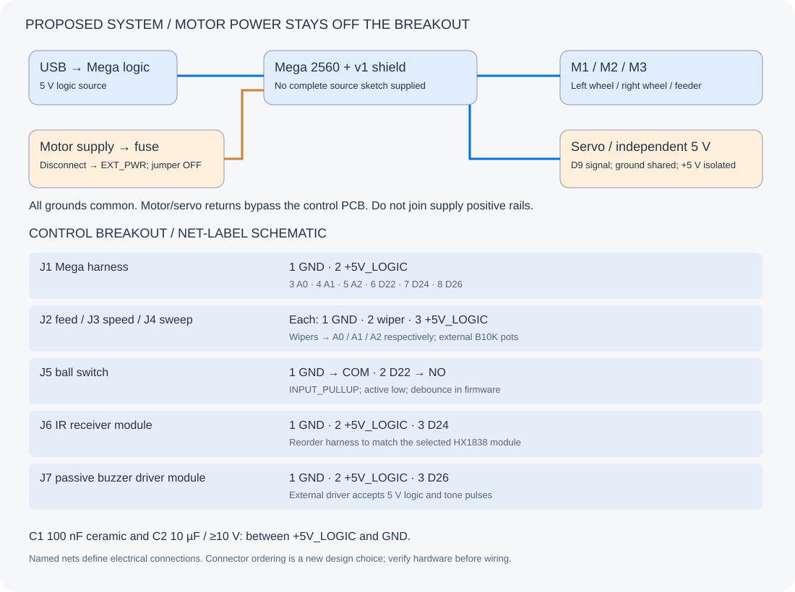
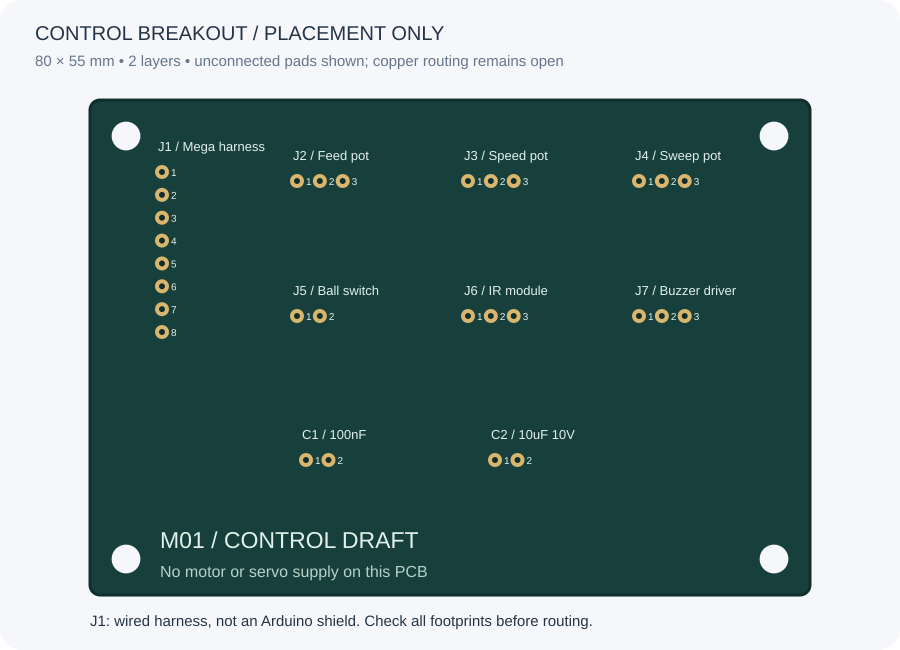
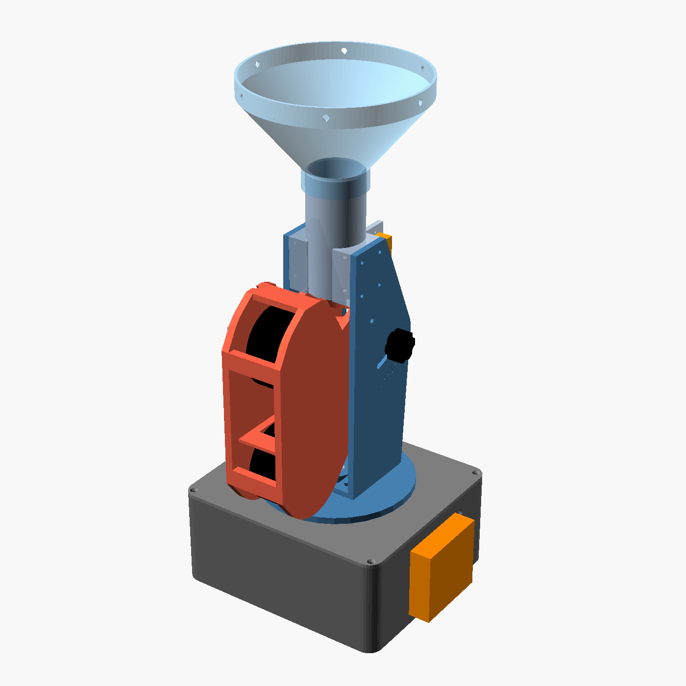
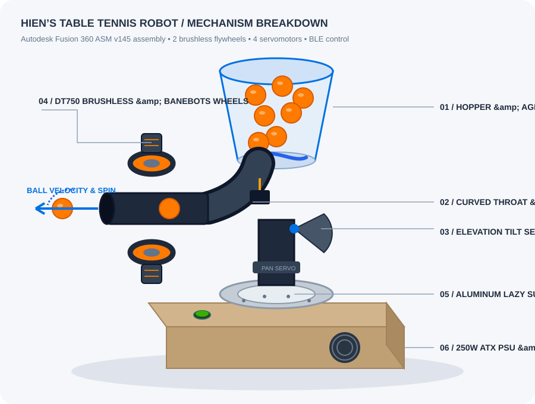
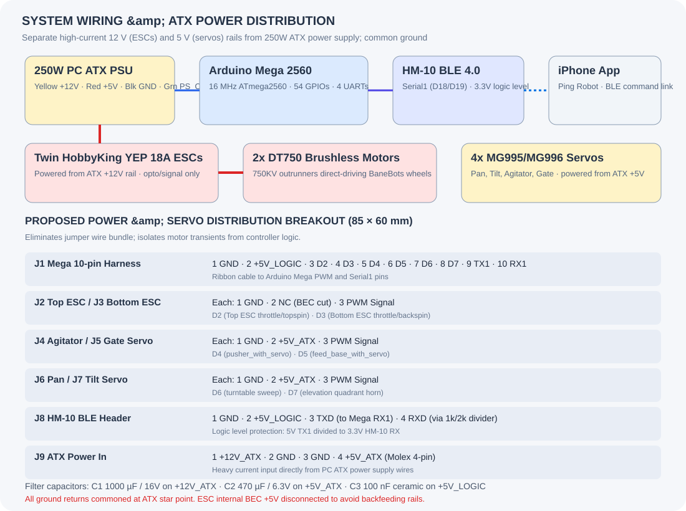
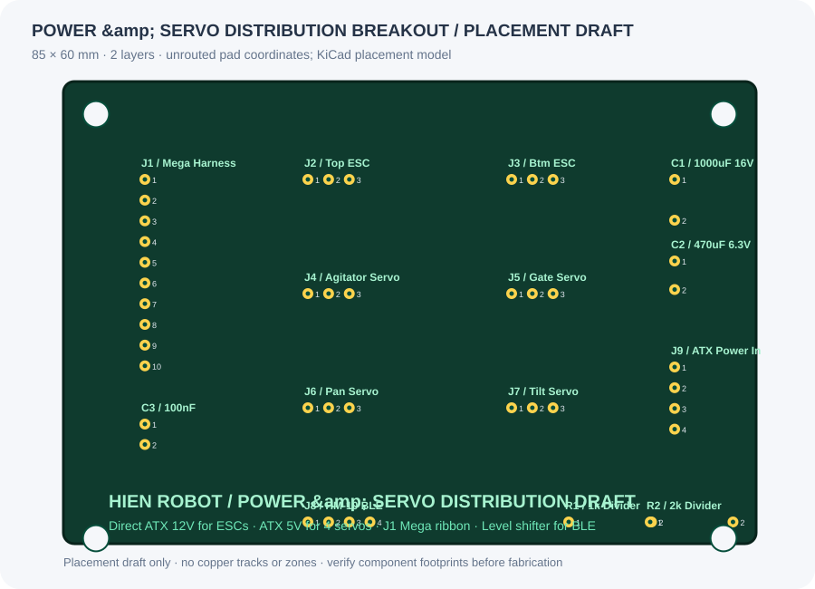

Print with a plan.
Ten original plates, English part names, and individual STL files organized by plate.
THREE WAYS TO MAKE YOUR NEXT PRACTICE PARTNER
Explore a build, understand the mechanism, and plan the hardware.
Your next practice partner,
built by you.
A 3D-printed ping pong launcher. Original CAD, English instructions, and a step-by-step guide from the first print to the first ball.
Start the build How it works
Loading the original assembly…A hopper feeds balls into a motor-driven screw. Two rubber-covered wheels accelerate each ball through the outlet. Three PWM controls adjust the two launch motors and the feeder independently.
This guide translates the supplied Chinese source files. The assembly order is reconstructed from CAD and photos; physical verification remains open.
Read the build notes ↗Ten original plates, English part names, and individual STL files organized by plate.
Explore the actual assembly and follow a guided sequence with animated 3D part groups.
Check each motor, confirm the feed path, and record a controlled first trial.
The feeder brings a ball between the rubber-covered rims. Both contact surfaces move toward the exit. Friction grips and accelerates the ball; the outlet guides its path.
Wheel speed changes the launch. A difference between the two contact speeds can add spin. Feeder speed controls when the next ball arrives.
Tick the items you already have. This list includes the source hardware, print materials, trial supplies, and additions for a complete installation. Confirm entries with unresolved dimensions or ratings before buying.
Before ordering: confirm motor shafts, controller current ratings, and fastener differences. The source’s 12 V / 3 A supply has no verified system current budget.
Listed spec matches means the published specification matches, not that physical fit is validated. Alternatives can require new mounts. Browse links open categories, not confirmed substitutes. Shared kits and filament spools appear in several rows; buy them once.
Select an image to compare its photo and SVG. Reference images show appearance, not a verified fit. Image sources ↗
| Gathered✓ | PART | SPECIFICATION / BUILD NOTE | QTY | BOTLAND / COMPATIBILITY |
|---|
Printable shopping checklist and buying notes ↗
Keep the original plate orientations and support painting. Change the printer and filament profiles to match your equipment, then inspect each slice.
28 source objects · 1,422,006 triangles · no boundary edges, non-manifold edges, or degenerate triangles in the exported mesh checks. Wall thickness, self-intersections, balance, fit, and physical performance remain unverified.
The original maker recommends a finer layer height for the bevel gears. The source gives no exact value. Measure a tight shaft bore and correct the fit before assembly.
Read the full print guide ↗Guide review complete. Resolve remaining build notes before routine use.
Suggested sequence · movement is illustrative

The controllers share a 12 V DC supply. Each controller drives one motor. Confirm the labels and ratings on your selected hardware.
Topology only. This is not a terminal-level schematic. Fuse values, connector polarity, and current ratings need confirmation. Keep mains wiring inside an enclosed, isolated supply.
The supplied photographs document the motor mounts, rubber-covered wheels, feeder gear, and ball stopper. Keep them beside you during assembly.
Read the source translations ↗The source video is preserved unchanged. It is a visual reference, not a performance specification.
28 renamed objects · original 10-plate setup
Organized by plate · millimeter units
Editable source geometry · original names
Assembly, printing, wiring, translation, and BOM
Also available: mesh inspection report · source checksums
THE PRACTICE PROJECT / 002
Cody’s Arduino launcher.
A bucket hopper, twin launch wheels, and a servo-steered frame. An English hardware study of codyhsu’s 2019 Mobile01 build.

01 / THE MECHANISM
Step through the ball path. The animation explains the sequence; it does not predict timing, speed, or trajectory.
STEP 1 / 5
The bucket stores balls above a rotary metering disk.
The author describes rotary feeding, ball-triggered aiming, and adjustable feed rate, speed and sweep. IR modes include three placements and random aiming/speed. Equal wheel speeds aim to reduce spin; the head can rotate to change its spin axis.
No dimensioned CAD, motor ratings, calibrated ball speed, complete sketch, or PCB fabrication files were found in the inspected post. Tire gap, feed clearances, servo linkage and power budget need a physical prototype.
02 / PARTS & MATERIALS
Transcribed from the source’s photographed BOM. “Proposed addition” rows belong to this guide. Historical prices are not a current shopping budget.
| Part / evidence | Specification and build notes | Qty |
|---|---|---|
| M01ControllerSource BOM | Arduino Mega 2560UNO was the earlier version; Mega is used for IR and sound. | 1 |
| M02Motor driverSource BOM | L293D / Adafruit Motor Shield v1 compatibleAFMotor.h interface; not the I²C v2 shield. Verify clone wiring. | 1 |
| M03Launch motorsSource BOM | DC motor; model and voltage unspecifiedMeasure stall current before selecting a driver or supply. | 2 |
| M04Launch tiresSource BOM | Tamiya 94325 large-diameter sponge tire / wheel setSource names a limited-edition Mini 4WD set; fit and availability unverified. | 1 |
| M05Feeder motorSource BOM | Plastic DC gearmotor, 1:220Drives the rotary ball-metering disk; no rated voltage given. | 1 |
| M06Aiming servoSource BOM | MG90S metal-gear micro servoMoves the hinge linkage. Verify travel and load before attaching horn. | 1 |
| M07Ball detectorSource BOM | Omron SS-5GL microswitchSenses a ball in the feed channel; not a speed sensor. | 1 |
| M08Local controlsSource BOM | B10K linear potentiometer + knobFeed interval, launch speed, oscillation range. | 3 |
| M09Remote controlSource BOM | HX1838 receiver module + NEC IR remoteCheck receiver-module pin order; bare receiver and module differ. | 1 |
| M10SoundSource BOM | Passive buzzer, 3–5 VProposed PCB uses an external passive buzzer driver module instead. | 1 |
| M11RegulatorSource BOM | LM2596S adjustable buck moduleSet output before connection. Input must exceed required output. | 1 |
| M12Battery cellsSource BOM | 18650 cells; source claims 4200 mAhUnverified capacity claim. Pack topology and protection are not established. | 2 |
| M13Battery holderSource BOM | 18650 holderSeries/parallel wiring not specified; do not infer a charger connection. | 1 |
| M14ChargerSource BOM | NYI-0850 single-cell Li-ion chargerListed for individual 3.7 V nominal cells; not a documented 2S charger. | 1 |
| M15Prototype boardSource BOM | 400-point solderless breadboardReplace with the proposed breakout after bench verification. | 1 |
| M16HopperSource BOM | Reused chicken bucketFeeds the rotary disk under gravity. | 1 |
| M17StructureSource BOM | Wood stripsStand, cross feet and hopper cradle; dimensions not published. | 2 |
| M18PivotSource BOM | Small door hingeServo linkage steers the launcher assembly. | 1 |
| M19Feed tubeSource BOM | Reused kitchen paper tubeGuides balls toward the wheels; fit must be measured. | 1 |
| P01Control breakoutProposed addition | 80 × 55 mm, 2-layer PCB placement draftJ1–J7, C1 100 nF, C2 10 µF; unrouted, no fabrication outputs. | 1 |
| P02Buzzer interfaceProposed addition | 5 V passive buzzer driver module, active-high signalInput must accept 5 V logic and tone pulses; choose module before routing. | 1 |
| P03Bench powerProposed addition | Current-limited motor supply + regulated 5 V servo supplyMega powered by USB for initial tests; grounds common, positive rails separate. | 1 |
| P04Protection and assemblyProposed addition | Fuse, disconnect, wire, connectors, guards, fastenersSize protection and wiring from measured current; quantities depend on build. | 1 |
The listed cell capacity is the author’s claim. Battery protection and pack topology are unresolved; start with current-limited bench supplies.
03 / ELECTRICAL SCHEMATIC
Proposed wiring for a reproducible prototype. GPIO numbers and separate motor channels below are new assignments, not a transcription of unreadable image labels.

| Connector / net | Connect to | Connection notes |
|---|---|---|
| J1.1GND | Mega GND | Common signal ground; motor/servo returns go directly to their supply. |
| J1.2+5V_LOGIC | Mega 5V output | Feeds pots, receiver and low-current buzzer module only; never servo or motors. |
| J1.3 → J2.2FEED_A0 | Mega A0 | J2: 1 GND · 2 wiper · 3 +5V_LOGIC; B10K feed interval pot. |
| J1.4 → J3.2SPEED_A1 | Mega A1 | J3: 1 GND · 2 wiper · 3 +5V_LOGIC; B10K launch-speed pot. |
| J1.5 → J4.2SWEEP_A2 | Mega A2 | J4: 1 GND · 2 wiper · 3 +5V_LOGIC; B10K sweep-range pot. |
| J1.6 → J5.2BALL_D22 | Mega D22 | J5.1 GND to switch COM; J5.2 to NO. INPUT_PULLUP; debounce in firmware. |
| J1.7 → J6.3IR_D24 | Mega D24 | J6: 1 GND · 2 +5V_LOGIC · 3 receiver OUT. Verify module connector order. |
| J1.8 → J7.3TONE_D26 | Mega D26 | J7: 1 GND · 2 +5V_LOGIC · 3 passive driver IN. No bare magnetic buzzer on GPIO. |
| Off boardSERVO_D9 | Mega D9 / shield servo signal | Servo + to external regulated 5 V, servo − to supply ground. Do not join external +5 V to shield +5 V. |
| Shield M1LAUNCH_LEFT | Left launch motor | Proposed dedicated channel; confirm forward direction at low duty. |
| Shield M2LAUNCH_RIGHT | Right launch motor | Proposed dedicated channel; opposite mechanical rotation, both surfaces propel ball outward. |
| Shield M3FEED_MOTOR | Rotary feeder motor | Proposed dedicated channel; M4 unused. Verify each motor against driver current limits. |
| Off boardVMOTOR | External supply → fuse → disconnect → shield EXT_PWR | Remove shield power jumper for USB logic + external motor power. Voltage depends on measured motor ratings. |
V1 uses D3/D5/D6/D11 for motor PWM and D4/D7/D8/D12 for the latch. D9 is the proposed servo signal; D10 remains reserved for the other servo header. The controls use A0–A2 and D22/D24/D26.
The v1 L293D shield is specified for 0.6 A continuous per bridge, 1.2 A peak. Driver heating and combined load also matter. Check startup and stall current; a heatsink does not raise the chip’s electrical rating.
References: Adafruit v1 pin use · motor limits · separate power. Remove the shield power jumper with separate motor power. Route motor and servo returns directly to supply ground; join logic ground there.
04 / PROPOSED PCB
A small control breakout gathers the three pots, ball switch, receiver and buzzer interface. The Mega, motor driver and servo power stay off board.

PLACEMENT DRAFT / NOT FOR FABRICATION
The KiCad board contains through-hole pads, named nets, a board outline and four M3 clearance holes. Its airwires still need routing. C1 (100 nF) and C2 (10 µF) decouple the logic rail.
Use J1 as a wired harness to the Mega, not a stackable Arduino shield. Verify connector orientation and selected component footprints, route both layers, then run DRC and electrical review before ordering. There are no Gerbers in this draft.
05 / FIRMWARE & SOURCE NOTES
The author moved from UNO to Mega for more timer resources. The source gives library names and edits, but no complete downloadable sketch was found.
AFMotor.h (v1), Servo.h, IRremote 2.2.3 and Tone.h. The source moves IRremote to Timer4 and restricts Servo to Timer5. Tone’s allocation and motor PWM still need a combined test. Current IRremote versions use a different API.
Analysis checked 27 October 2026. Drawings are newly made explanatory reconstructions. Exact original signal pins, motor voltage, battery topology and manufacturing dimensions remain unverified.
PROJECT 03 · PICO 2 W
Explore the battery-powered twin-wheel robot, simulate shots, and build it in five test phases. Performance figures are estimates until measured on a physical build.
Open PingPongThrower to load the interactive model.
Full build guide · Five test phases · Wiring and first power-on
Phase 1 print kit · Phase 2 · Phase 3 · Phase 4 · Phase 5

THE PRACTICE PROJECT / 003
Nguyen Van Hien’s BLE table tennis robot.
Twin DT750 outrunners, BaneBots rubber wheels, a 4-servo pan-tilt hopper gimbal, and an iPhone Bluetooth app. An English hardware study of Nguyen Van Hien’s 2020 YouTube build.

01 / THE MECHANISM
Step through the ball path. The animation explains the sequence; it does not predict timing, speed, or trajectory.
STEP 1 / 5
The translucent bucket holds practice balls above the intake throat. An agitator disk stirred by the first servo prevents ball bridging.
Nguyen Van Hien documented hexTronik DT750 750KV brushless motors, HobbyKing YEP 18A ESCs, BaneBots 2-7/8" wheels with 4 mm hex hubs, 4x MG995/MG996 servos, an ATX 250W power supply, Arduino Mega 2560, HM-10 BLE, and a lazy susan turntable bearing. Fusion 360 assembly ASM v145 confirms the 3D-printed curved throat and motor brackets.
The author showcased the CAD model in video but did not publish open-source STL/STEP files or raw sketch code. Wheel compression gap (~36–38 mm for 40 mm balls), feed clearances, and exact wooden box mounting brackets must be measured on a physical prototype.
02 / PRACTICE MODES & SPIN
The author programmed distinct practice drills selectable over Bluetooth from his iPhone app.
Ball strikes the near table half first, clears the net, and lands deep in the opponent court.
03 / PARTS & MATERIALS
Transcribed from Nguyen Van Hien’s video description, subtitles, and CAD breakdown. “Proposed addition” rows belong to this guide.
| Part / evidence | Specification and build notes | Qty |
|---|---|---|
| H01Launch motorsSource description | hexTronik DT750 750KV Brushless OutrunnerTwin 3-phase outrunners direct-drive the launch wheels; high torque and speed. | 2 |
| H02Speed controllersSource description | HobbyKing YEP 18A (2~4S) SBEC Brushless ESC18 A continuous brushless ESCs; powered from ATX 12 V high-current rail. | 2 |
| H03Launch wheelsSource description | BaneBots 2-7/8" orange rubber wheels (RB-Ban-91)40A middle-soft shore durometer elastomer tire grips the 40 mm ball. | 2 |
| H04Wheel mountsSource description | BaneBots 1/2" hex hub with 4 mm boreCouples the DT750 4 mm motor shaft to the BaneBots 1/2" hex wheel bore. | 2 |
| H05Launch barrel & mountsSource CAD | 3D-printed barrel and motor tabs (canon v54, motor_mount_tab_ext v58)Autodesk Fusion 360 assembly ASM v145; holds twin motors with wheel cutouts. | 1 |
| H06Hopper containerSource video | Translucent plastic bucket (cup v2)Bulk ball container mounted above the rotary agitation and feed throat. | 1 |
| H07Feeder agitator servoSource description | TowerPro MG995 / MG996 metal-gear servoRotates the bottom agitator disk (pusher_with_servo v12) to prevent bridging. | 1 |
| H08Feeder gate servoSource description | TowerPro MG995 / MG996 metal-gear servoActuates the escapement gate (feed_base_with_servo v52) to meter balls. | 1 |
| H09Feed throatSource CAD | 3D-printed curved feed tube (feed_curve v105)Curves balls down by gravity from the hopper bottom into the launch barrel. | 1 |
| H10Turntable bearingSource description | 120 mm Aluminum Lazy Susan rotating plate (Amazon B07F3VHGKX)Circular ball-bearing ring supports robot weight and enables 360° pan rotation. | 1 |
| H11Pan / yaw servoSource description | TowerPro MG995 / MG996 metal-gear servoMounted to vertical base bracket (base_leg v15); sweeps launcher horizontally. | 1 |
| H12Tilt / elevation servoSource description | TowerPro MG995 / MG996 metal-gear servoActs on circular quadrant horn (hand_servo v64) to control pitch angle. | 1 |
| H13ControllerSource description | Arduino Mega 2560 CardGenerates 6 independent servo/ESC PWM signals and handles BLE hardware serial. | 1 |
| H14Bluetooth moduleSource description | HM-10 Bluetooth Low Energy (BLE 4.0) moduleEnables wireless command link from custom iOS iPhone app (Ping Robot). | 1 |
| H15Power supplySource description | 250W PC ATX computer power supplyProvides heavy 12 V rail for brushless ESCs and 5 V rail for the 4 servos. | 1 |
| H16Base enclosureSource description | Custom wooden box (box v5)Houses ATX PSU, Arduino Mega, ESCs, wiring harness, and turntable mount. | 1 |
| H17Power switchSource video | Green illuminated panel pushbutton switchTop deck switch pulls ATX PS_ON green wire to ground to turn on DC rails. | 1 |
| P01Power & servo breakoutProposed addition | 85 × 60 mm, 2-layer distribution PCB placement draftJ1–J9, ATX Molex input, C1 1000 µF, C2 470 µF, C3 100 nF; unrouted draft. | 1 |
| P02BLE level dividerProposed addition | 1 kΩ and 2 kΩ 1/4W metal film resistorsProtects HM-10 3.3 V RX input from Arduino Mega 5 V TX1 output signal. | 2 |
| P03Rail filter capacitorsProposed addition | 1000 µF 16V, 470 µF 6.3V electrolytic, 100 nF ceramicSmooths 12 V brushless ESC switching noise and 5 V servo stall surges. | 3 |
| P04Wiring harness & terminalsProposed addition | 10-pin Mega harness, Molex connector, 3-pin headers, 3.5 mm bulletsOrganized clean wiring between wooden base electronics and moving gimbal. | 1 |
04 / ELECTRICAL SCHEMATIC
Proposed wiring separating high-current 12 V ESC rails and 5 V servo rails from Arduino logic.

| Connector / net | Connect to | Connection notes |
|---|---|---|
| J1.1GND | Mega GND | Common ground reference across Mega, ESCs, servos, and ATX supply. |
| J1.2+5V_LOGIC | Mega 5V output | Feeds logic rail and HM-10 BLE module; isolated from high-current servo 5 V. |
| J1.3ESC_TOP_D2 | Mega D2 | Hardware PWM signal for top DT750 ESC (throttle / topspin bias). |
| J1.4ESC_BTM_D3 | Mega D3 | Hardware PWM signal for bottom DT750 ESC (throttle / backspin bias). |
| J1.5AGIT_SERVO_D4 | Mega D4 | PWM control signal for hopper rotary agitator disk servo. |
| J1.6GATE_SERVO_D5 | Mega D5 | PWM control signal for feed escapement gate servo. |
| J1.7PAN_SERVO_D6 | Mega D6 | PWM control signal for horizontal turntable yaw servo. |
| J1.8TILT_SERVO_D7 | Mega D7 | PWM control signal for vertical pitch elevation quadrant servo. |
| J1.9BLE_TX1_D18 | Mega TX1 (D18) | Serial data to HM-10 RX via onboard 1 kΩ / 2 kΩ resistor voltage divider. |
| J1.10BLE_RX1_D19 | Mega RX1 (D19) | Serial data directly from HM-10 TX (3.3 V high satisfies Mega Vih threshold). |
| J2–J3ESC_SIG | YEP 18A ESC inputs | 3-pin headers for ESC signal lines (GND and signal; ESC BEC wire disconnected). |
| J4–J7SERVO_HDR | 4x MG995/MG996 servos | 3-pin headers with high-current ATX +5V, GND, and independent signal line. |
| J8BLE_HDR | HM-10 BLE module | 4-pin header: GND, +5V_LOGIC, TXD, RXD (level divided). |
| J9 / PWRATX_INPUT | ATX 4-pin Molex | Yellow (+12 V to ESCs), Red (+5 V to servos), Black (GND), Green (PS_ON). |
Four MG995/MG996 servos moving together demand 5–8 A peak stall current. The 250W ATX supply’s red wire delivers 20 A at 5 V, completely preventing microcontroller reset. ESCs draw up to 15 A peak from the separate 12 V yellow rail.
The HM-10 transceiver runs at 3.3 V. While the Mega safely reads 3.3 V on RX1, the Mega’s 5 V TX1 output will damage the HM-10 RX line over time without a 1 kΩ / 2 kΩ resistor voltage divider.
05 / PROPOSED DISTRIBUTION BREAKOUT
An 85 × 60 mm distribution PCB that consolidates ATX power, 4 servo outputs, 2 ESC signals, and HM-10 BLE onto an Arduino Mega ribbon harness.

PLACEMENT DRAFT / NOT FOR FABRICATION
The KiCad board contains through-hole pads, net assignments, an 85 × 60 mm outline, and four M3 mounting holes. High-current traces for 12 V and 5 V still require routing in KiCad with adequate copper width (≥2.5 mm).
C1 (1000 µF / 16V) absorbs brushless ESC inductive switching spikes, C2 (470 µF / 6.3V) buffers servo stall surges, and C3 (100 nF) bypasses logic noise. The onboard level shifter safeguards the HM-10 Bluetooth module.
06 / FIRMWARE & BLUETOOTH CONTROL
The author created a custom iOS app ("Ping Robot") communicating with the Arduino Mega via the HM-10 BLE transceiver.
As documented in the iPhone demonstration, the Mega parses serial command strings including:
Feeder speed 1..3 (agitator/gate timing),
Banebot speed 20..60 (ESC throttle PWM), and
Ball gun ON. Pan-tilt angles adjust via servo write microseconds.
Analysis checked 27 October 2026. Diagrams and breakout board are newly made explanatory reconstructions. Exact original CAD dimensions, wheel compression gap, and full Arduino firmware remain unreleased by the original author.